Saprativa Bhattacharjee & Tirthankar Ghoshal
26 July 2021
Joe Biden is the 46th President of the United States.
Joe Biden is the best President of the United States.
To - justify - persuade - resolve conflict - make decision - deliberate - recommend …
I am hungry because I didn’t have breakfast today.
I am hungry –> claim
I didn’t have breakfast today –> premise
Claim
Conclusion
Premise
Evidence
Reason
Monologue
Single author/speaker
Dialogue
More than one
The arguments with implicit premises (and sometimes conclusions).
(Moser and Mercer, 2020)
When conclusions are implicit, usually not called enthymemes then.
(Henning Wachsmuth, Basics of Argumentation)
But Brutus says he was ambitious; And Brutus is an honorable man.
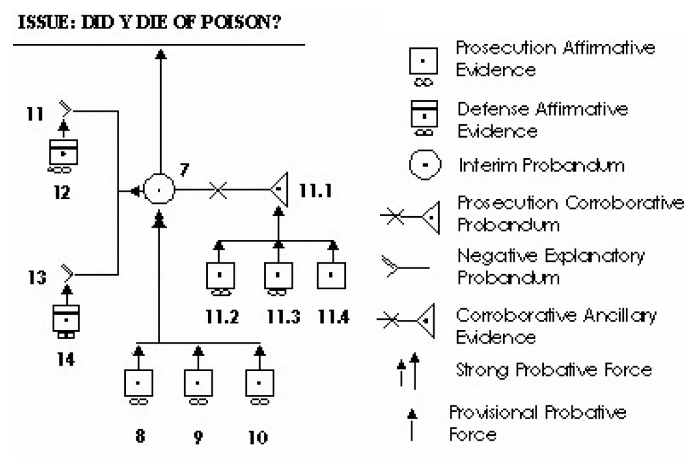
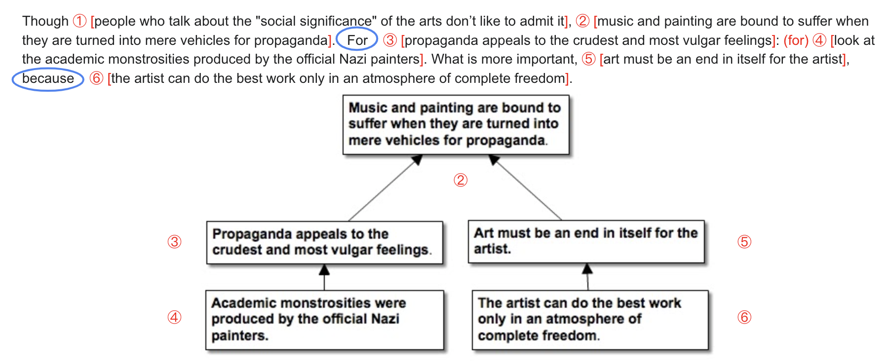
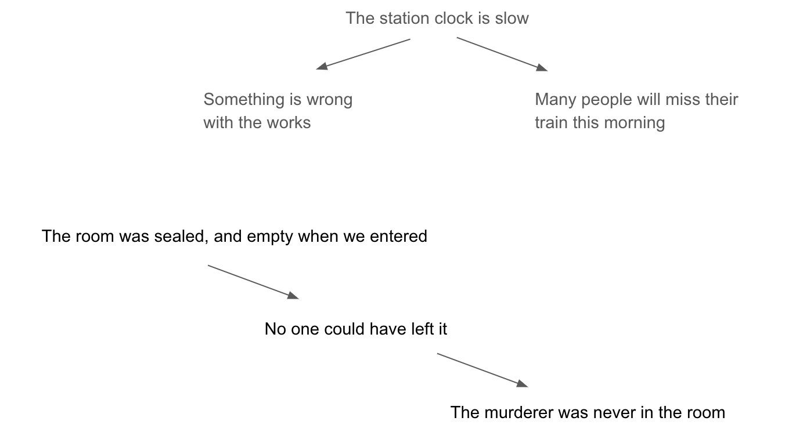
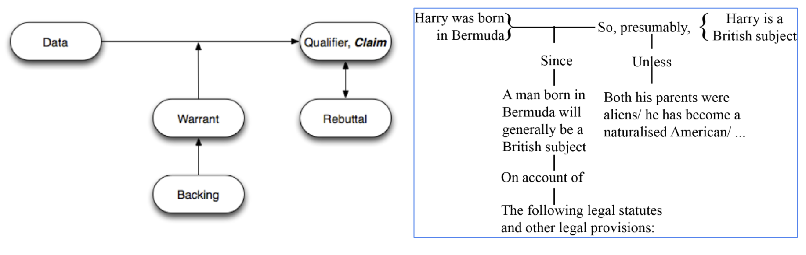
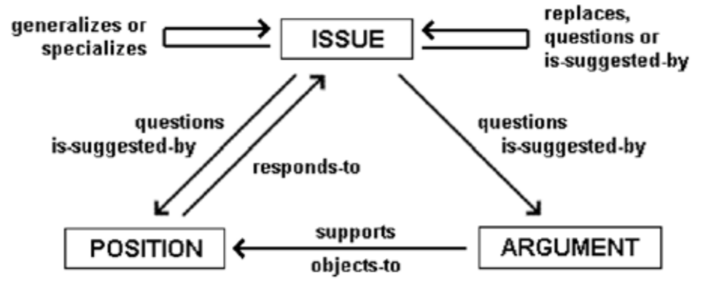
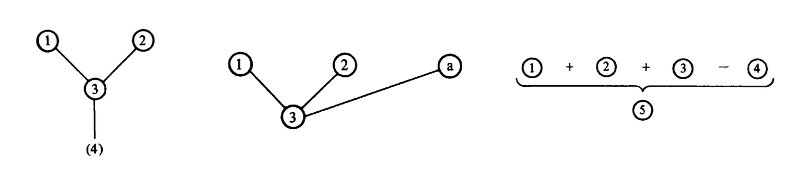
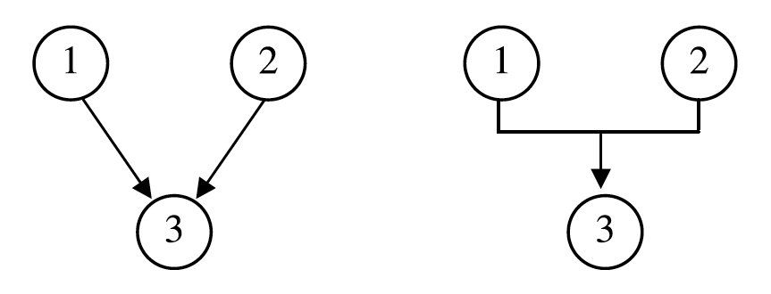
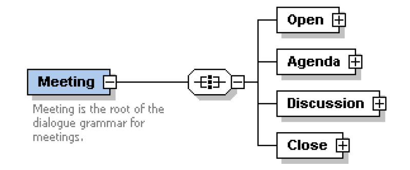
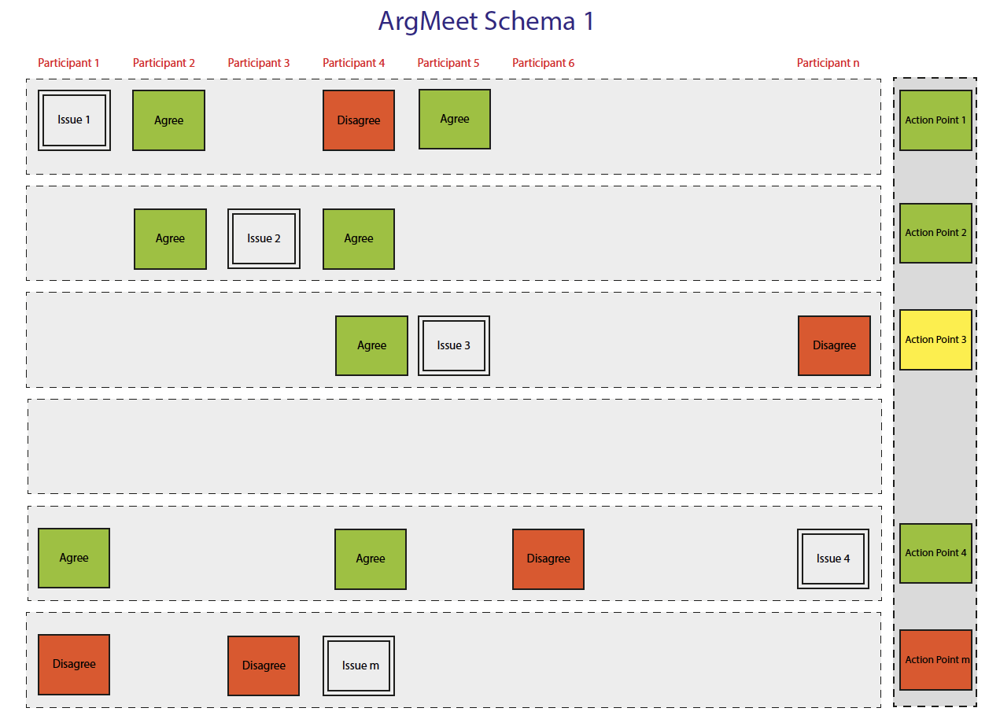
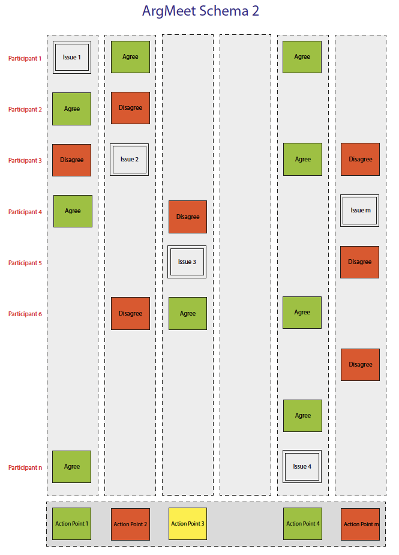
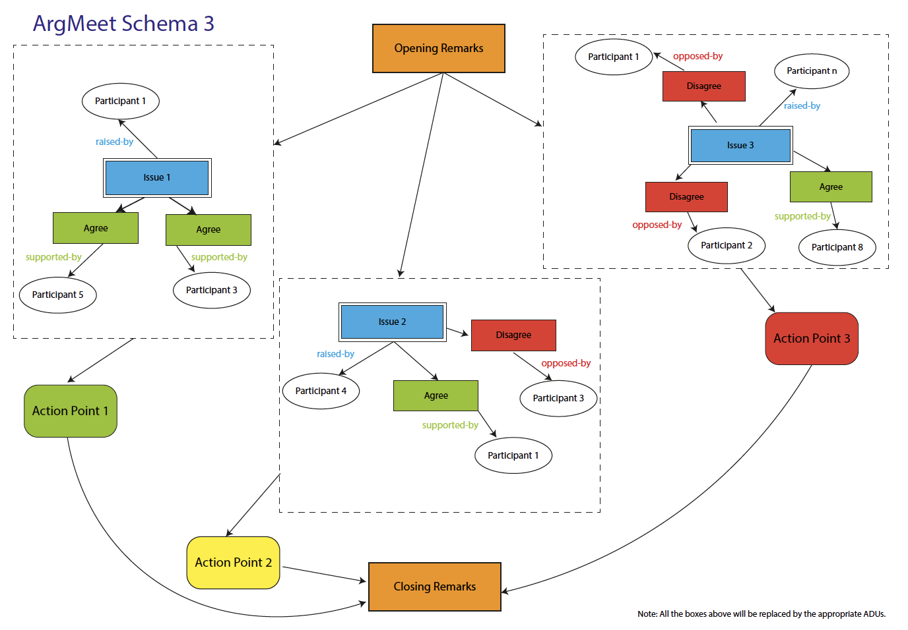